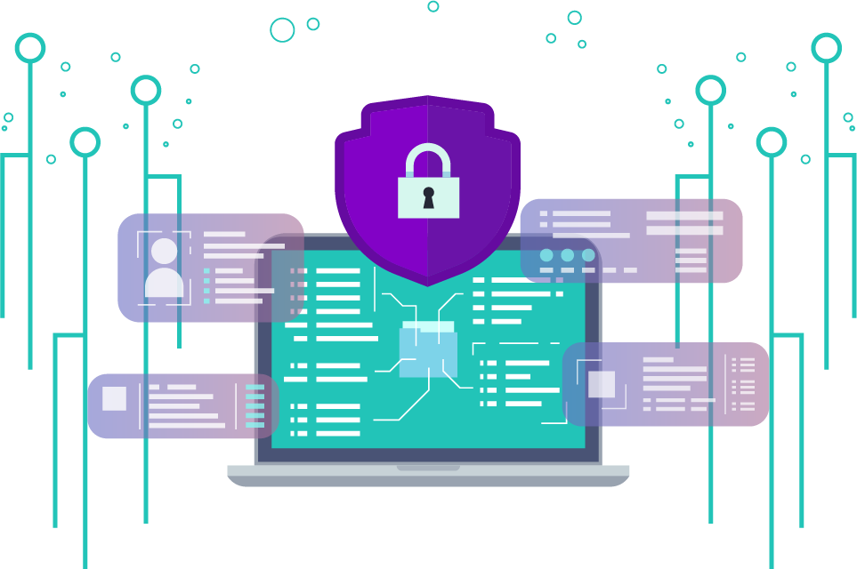

Keep your software up to date:
Regularly update your operating system, antivirus software,
web browsers, and other applications to ensure you have the
latest security patches.

Cybersecurity is the practice of protecting computer systems, networks, and digital data from unauthorized access, damage, or disruption.
Modern cybersecurity combines technology, processes, and human awareness to defend against evolving cyber threats.
Cybersecurity is no longer optional — it is a critical requirement in today’s digital world.
By investing in strong security practices, organizations can reduce risk and stay resilient against modern cyber threats.
Staying informed is one of the strongest defenses against cyber threats. These curated resources help you understand risks, apply best practices, and stay ahead in an evolving digital landscape.
Learn cybersecurity fundamentals through structured guides designed for beginners and professionals alike.
Security tools play a crucial role in detecting threats and preventing unauthorized access to systems and networks.
Stay informed about emerging threats and active attack campaigns through reliable threat intelligence sources.
Industry-recognized frameworks and government resources provide trusted guidance for building secure systems.